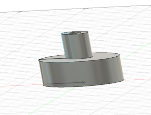
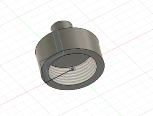
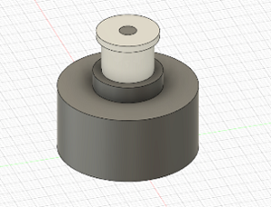
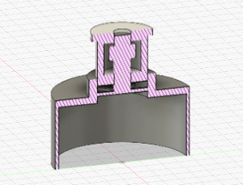

モノづくり班において出たサーモクロミックという発想から考えた。

ペットボトルキャップと同じ大きさにしてありこのアタッチメントに切り替えて使う。
飲む部分を熱感知にし気温が暑いときに赤く色が変化することで気温上昇が一目でわかり熱中症や脱水症状になることを防ぐ。また飲むことで熱感知が冷やされ青色に戻り、また飲むタイミングで赤く変わる仕様にする。
飲む部分の改良が必要。案が浮かばない。

自分が出した案を常川君が改良してくれた。
自分が想像していたものが出来上がったとともに自分の技術力の無さが分かった。
問題に上がったのが面白さがないことだったので再改良することにした。